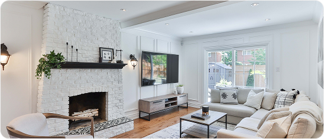
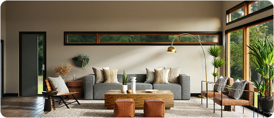
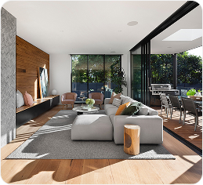
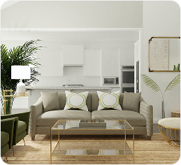

Projetos Realizados
Trabalhamos com o estilo contemporâneo e atemporal, onde buscamos entender o gosto do cliente e aplicar de forma personalizada, com um toque de decoração afetiva para ser sentida, com características únicas e sempre diferente uns dos outros, acreditamos que um lar deve refletir seus moradores.



